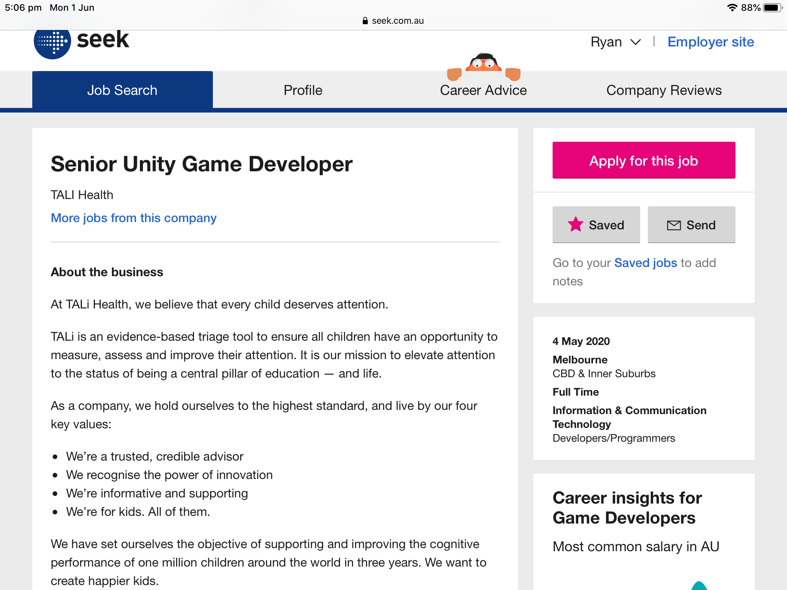
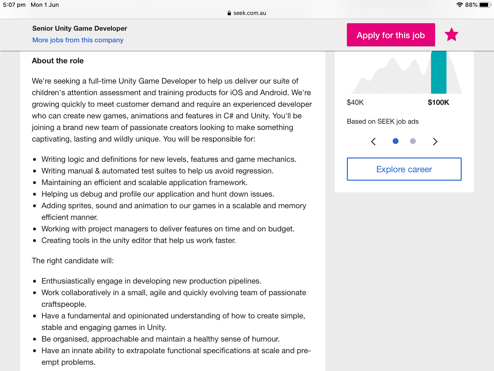
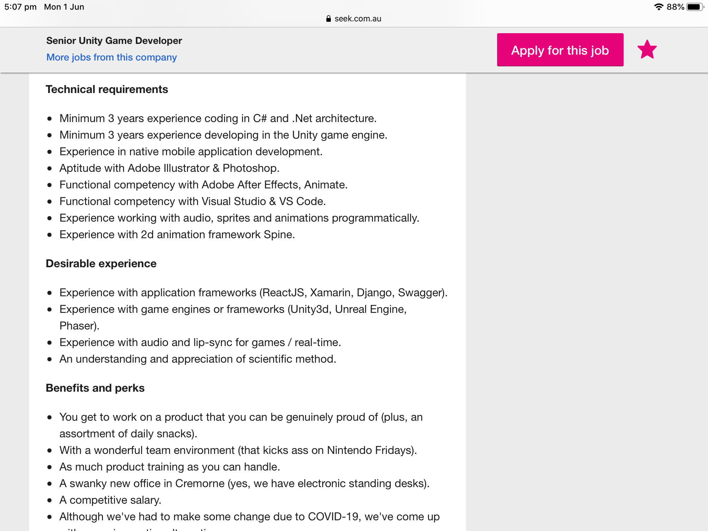
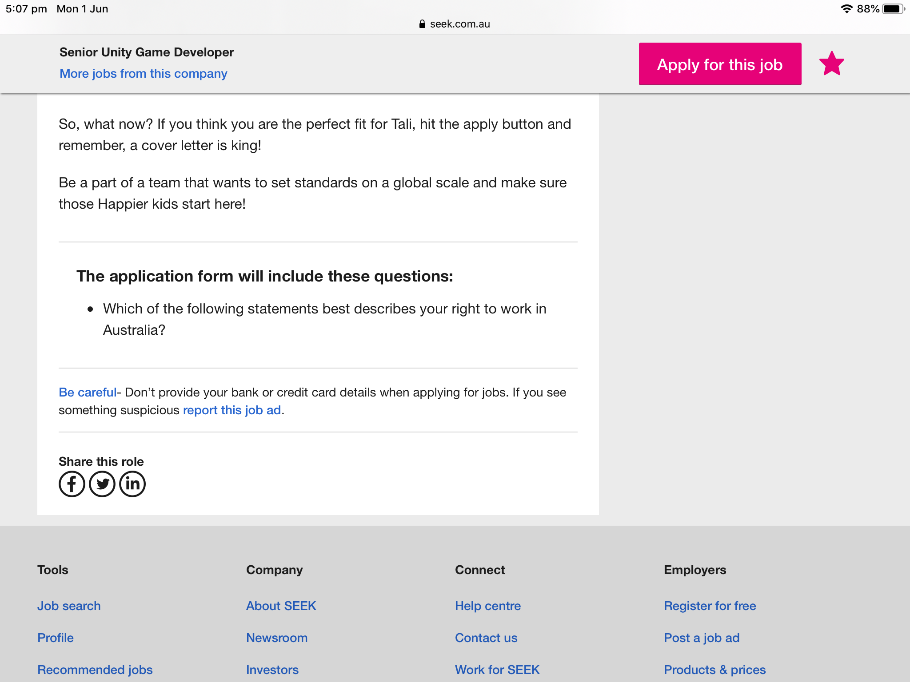

Student Number:s3865508
Email:s3865508@student.rmit.edu.au
Location: Melbourne, Australia
Personal Information
Originally from Melbourne, Australia in the 21st century my cultural background could be accurately described as “Western” as I have travelled to all continents with the exception of Antarctica. My education up to this point is fairly low after graduation of V.C.E in 2001. I am English speaking only with a basic understanding of formal greetings of most countries I have visited.
An interesting occurrence during travel in July, 2016 when I in my first day of visiting Turkey a military coup occurred. It was my first experience of the internet literally being severely censored by the incumbent Turkish government blocking off access to almost all websites and any and all use of social media, the only internet service that received no ill affect’s during the first 12 hours of the coup was email, I was able to communicate unhindered through my Hotmail.com account with no problems what so ever.
Interest in I.T
My interest in I.T varies from a life long in interaction with Nintendo products and software, I even had the amazing opportunity to visit the original Nintendo Factory and office in Kyoto, Japan. In addition to keeping up to relative speed with the use of ipad’s, smartphone’s, windows surface 2 in 1, gopros, Garmin G.P.S units to ensure where ever I am travelled in the world especially on a Vespa I have been able to known exactly where I am even though I am riding at a 100km/h in the absolute pouring rain, along with various other devices such a Raspberry pi.
The original Nintendo factory and office where Nintendo's founder Fusajirō Yamauchi is rumored to be buried in the basement.
Each device I own has a specific purpose and a special advantage over the other for example: pre Covid 19 I would travel between occupations and on work breaks (holidays) and take a “ Dji Spark” drone with me to gain a totally different perspective of the new surroundings I was visited. An example of this was utilised in the Mojave Desert in California U.S.A and having the option of broad consumer technology like an ipad mini 4 allowed for the best compatibility with Dji drones.
My interest in I.T started circa 1989 when I visited my cousins house and they have a “Nintendo Entertainment System” Mattel version with the “Legend of Zelda”. It amazed me that you could have a “birds eye view” of a game that was challenging and engaging. The soundtrack was repetitive but never boring a testament to the time and thought of the soundtrack being taken into account and I was able to be motivated by the music as much as the actual “battles” that “Link” engaged in with enemies.
The fact that the cartridge had a CR2032 which enabled you to save the game and continue right from where you left off made me take notice for the first time that technology does advance. Especially after seeing and playing the Atari 2600 some months before, in what at the time seemed like “ages and ages ago”.
I have no formal I.T experience
I chose RMIT because it offered the 2 introductory units “Online” that would enable me to gain access to the “Bachelor of I.T degree” should I be successful in passing the units. The Green Artwork on the Swanston street campus, which I believe is known as the “Green Brain” that has been there since at least the 1990’s has always made think the RMIT was a truly creative place and worthy of me enrolling.
I expect to learn a basic understanding of how the I.T industry functions, what level of commitment I will need to prepare myself, should I be successful in passing the 2 enrolled units of CPT-110 and CPT-120 and there by enrolling the full “Bachelor of I.T”. Learning how to effectively communicate online with other people and be able to complete group projects with different people all with different skill levels within I.T.
Personality test results
@,#,$
Ideal Occupation
Visit Tali Health for more information regarding the amazing educational compnay!
   !
This position is made available through TALI Health an organisation the involved in creating ios based games designed for children aged 3 to 8 to help diagnose and then help children with ADHA and ASD. I find this position appealing as early intervention in a child’s difficulty in cognitive development could avoid a lot of unnecessary stress and time wasted in the class room. Having Tali headquarters based in Cremorne helps too.
3 Years + of coding in C# and .Net
3 Years+ developing with the Untiy Game Engine
Fluent in all Adobe programs
Experience working with Sprites, Audio and Animations
Familiar with 2d animation through the Framework Spine
An understanding a proficient application of Scientific methods
3. I have no current skills, experience or qualifications to match with this position.
4. To devise a plan to ultimately make myself a credible potential candidate for the above mentioned role I would need to first obtain the Bachelor of I.T through RMIT, while learning and practicing as much as possible in my spare time with the Untiy game engine and be in constant contact with all related Adobe products especaily Illistrator and Photoshop. Focus directly on coding in c# and .Net architecture while being able to keep the “inner child” within myself to still keep the overall look, feel and user interaction of the Tali applications both enticing and easy for children to use.
Project
🌠
“Shooting Stars”
🌠An iOS app that helps Children aged 5 to 7 to read.
🌠“Shooting Stars” 🌠 an app that is specifically designed to have a simple choice option that allows the user (in this case the child’s parent or guardian) to select from at least 6 different themes and 6 different characters.
Fariytale – Traditional Brothers Grimm fantastical setting
Treasure Island – Robert Lewis Stevenson inspired island in the middle of the Pacific Ocean with buried treasure and shipwreck just of the coast of the island, half sunken.
Mars - Cosmonaut Luke, it having a great time exploring the planet Mars while conducting scientific experiments with his trusty pet cosmodog “Kippa”.
Truck depot - Dianne is a Truck driver and diesel mechanic that is always busy fixing things followed by more fixing.
Jungle - Julie has lived her whole life in the Jungle and is friendly with all the animals in Jungle except for Jules the naturlist to has crush on Julie but the feeling is not mutual.
Desert - Francis the artist is in the desert to capture the spirt of desert on canvas, if only he could find his Easal.
Dianne: The Trucker 🚚
Luke: The Cosmonaut 🚀
Millie: The Princess 🏰
Steve: The Sailor ⚓
Julie: Of The Jungle 🙉
Francis: The Lost Artisit 🎨
This project will be give parents and teachers another avenue to assist early students that are having difficulty in learning the fundamentals of reading in a normal class setting and are able to take the application home with them on their tablet to continue their learning in the comfort and safety of their homes.
Having the option of 6 differently themed locations there is options for the children to learn from a character that they feel most comfortable with and are able to identify with. In a setting that both offers the opportunity for a child’s imagination to grow and develop while learning the basics of reading with is the fundamental tenant of learning.
With the possibility of “instant” messaging attached to the program there will many difficulties in making the program both simple for a child to understand and interact with in addition to the nessercery parental controls and additional security measures in place. Distrobution of the application it’s self will come the a possible licence to particular schools and other educational facilities ie. Macgraw Hill education centres.
Potential drawbacks for an application such as this one is that the “education” market is well and truly flooded with educational applets with the biggest challenge being to separate this applet 🌠“Shooting Stars”🌠 from all the other “learning to read applets”. Once again and unable not to stress enough that the difference will have to be found in the ease of use and the childs desire to interact with the character of their choosing.
From fundamental research I can gather the it will be in my best interest to untilise a gaming engine and I believe a popular and relatively simple to use engine is “Unity”. An additional point worth mentioning is the “Unity” logo which is both simple and appropriate to be displayed on any package assossicated with the applet 🌠“Shooting Stars”🌠. An family and especially child friendly holistic approach must be taken on with every aspect of “Shooting for the Stars”, having a simple and non confrontational logos for the actual 🌠“Shooting Stars”🌠 logo to all other associated logo’s form developer tools to any and all other associsacted stakeholders is essential in nurturing a young family friendly educational product.
Hardware: iOS or Andriod tablet
Software: Unity game engine developed child friendly interactive
If 🌠“Shooting Stars”🌠proved to be successful the outcome would be a well known and integrated learning applet specifically targeted to cater the to needs of children aged 5 to 8 who are having difficulty learning the fundamentals of reading. The “original problem” would be solved by having a new creative way for students to interact with a new learning tool which they genuinely wish to interact with.
The impact this development would have is a positive impact of the next generation of children being able to further progress with there education as it will engage them to master the art of reading. Expanding on potentials that the app could have on a childs future is almost limitless, from inspiring a budding a teenage round the world sailor with the catalyst launched by “Steve” sailing around the ocean blue.
A big rig mechanic/driver could be the result of someone at young age taking note that joy and huge contributable value brought to society by the goods and materials that trucks give modern society to quote of misquote Jimmy Hoffa “ if you brought it at a store, you were able to by it at a store because it was brought to that store by a truck”.Dianne could be the inspiration to an up and coming "mover and shaker!"
Julie of the jungle has the potential to inspire a young naturalist to explore and stress the importance of conservation and understanding of the natural world around us. John Muir was inspired by getting out there and doing and Julie could offer that necessary spark.
This project in it's protype stage has the limitless potential to be able to reach out to a young student's who are struggling to be on par with the top performing students with regards to reading. This project has potential to branch further out into other spheres of education to allow every student every possible opportunity to get the most out of their early childhood learning experience.
All characters and content created in this "concept" mobile and tablet device application are completely origianl and if any resemblance to characters either fictional or non fictional is compeltely coincidental. Ryan Meredith s3865508,COSC2196, RMIT, 2020.! - All images obatained in the public domain from seek.com.au
@ - All images obatained in the public domain from https://16personalities.com
# - All images obatained in the public domain from https://openpsychometrics.org
$ - All images obatained in the public domain from http://www.emtrain.eu/learning-styles/